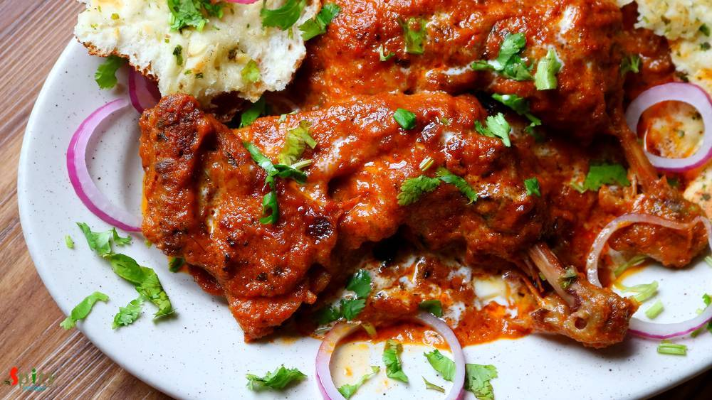
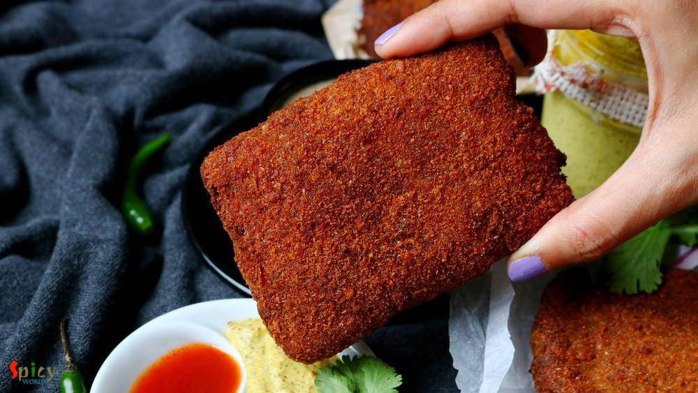

Simple and Easy Recipes

Kheer Kodom / Ras Kadam
Jul 25, 2019
- 
Dhaba style Butter Chicken / Murg Makhni
Jul 17, 2019

Aloo Tikki Chaat
Jul 9, 2019

Kolkata style Mutton Biriyani
Jul 2, 2019

Mango Ice Cream
Jun 27, 2019

Punjabi Mutton Curry
Jun 19, 2019
")
Suji Kala Jamun (Kalo Jaam)
Jun 12, 2019

Fish Rezala
Jun 8, 2019

Dhaba style Paneer Masala
Jun 4, 2019
- 
Fish Fry (Kolkata Style)
May 31, 2019
Spicy World
is a food blog where you can find Simple and easy recipes to make you and your loved ones happy and smile. Check out all our 298 recipes and 8 featured posts.Any Questions, feel Free to Email Us !!!
contact@spicyworld.in
Sep 13, 2019
One of the most famous dish from Mughlai cuisine is 'Chicken Chaap' and the taste is unbeatable. You will find the actual taste and flavor in few popular restaurants in Kolkata. After researching for a long time about the authentic recipe of Chicken chaap, here is the way how I made it. This recipe will give you the exact flavor of restaurant style Chaap. This dish should not be eaten as regular meal. It has a rich and thick gravy, goes best with pulao, biriyani, naan or roti. Try not to avoid any ingredient from the list otherwise you will not achieve the real taste. Do give it a try and let me know how it turned for you.


Sep 5, 2019
Sorshe bata (mustard paste) diye Mach (fish) is a staple for Bengali. I truly love every form of bengali fish curry from Jhol to Kaliya with some steamed rice. My mom makes this Sorshe bata diye Mach very often but I have never tried it with onion, ginger and garlic. One day I came across this Sorshe Salmon recipe of Somedutta's (my friday food swings) and it caught my attention. I gave it a try, wait ... not once but several times! The recipe is absolutely amazing, you can make this with any type of fish. Please do give it a try.

Aug 30, 2019
The main course dishes from 'mughlai cuisine' has rich, oily, flavorful gravy and my husband is a fan of their cuisine. One of our common favorite item is 'Chicken Rezala', thick + white + rich gravy with juicy chicken pieces. I like my rezala with thick gravy but many people also like to eat thin rezala gravy. I have already shared 'fish rezala' recipe with you and now it's time for chicken. Chicken Rezala goes best with Rumali roti, Plain chapati, Pulao or Khuska Biriyani. Try this in your kitchen and enjoy with your family.
")
Aug 21, 2019
If you have any Bengali friend in your gang then I guess you already know that he / she has a thing for fish, football and rabindra sangeet. We eat fish in many forms like thick curry (kaliya), thin curry (jhol), batter fried, shallow fried (mach vaja), steamed version (vapa) and so on. One of the popular among them is 'fried fish'. Now in this category also we have so many variations. The most simple one is shallow fried marinated (with salt and turmeric) fish and the complicated one is 'Fish Roll'. In this recipe fish fillets will be stuffed with spicy fish and shrimp filling then they will get a coating of breadcrumbs and at last deep fry them until golden ... it's the example of our ultimate love towards fish ?? . The hard part is making the roll, except that step, everything is easy. The taste of fish roll is phenomenal. You just need to give one bite to understand it's deliciousness.

Aug 15, 2019
Dopyaza means double the amount of onion. Paneer Dopyaza is a North Indian Paneer gravy preparation which has a thick, creamy sauce along with soft Paneer cubes and slight crunch of onion. In this recipe onions will be added twice in two different forms. It goes best with naan, roti or jeera rice. Do give it a try and let me know how it turned out for you.

Jul 30, 2019
Fish paturi aka Macher Paturi is a traditional Bengali recipe in which any white fish fillet (bhetki or swai or basa is preferable) or shrimp or Hilsa is cooked by wrapping in banana leaf. The word 'Paturi' comes from the Bengali word Pata or Leaf. Almost any Bengali function or good old Bengali restaurant is incomplete without Paturi. You can either steam them or fry them. But I like the fried version. You will need the freshest quality of fish for this recipe. Do try this in your kitchen and let me know how it turned out for you.